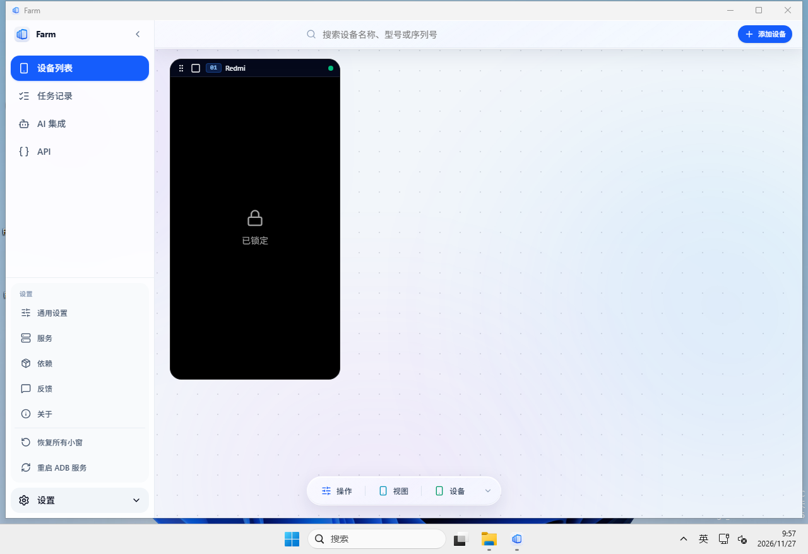
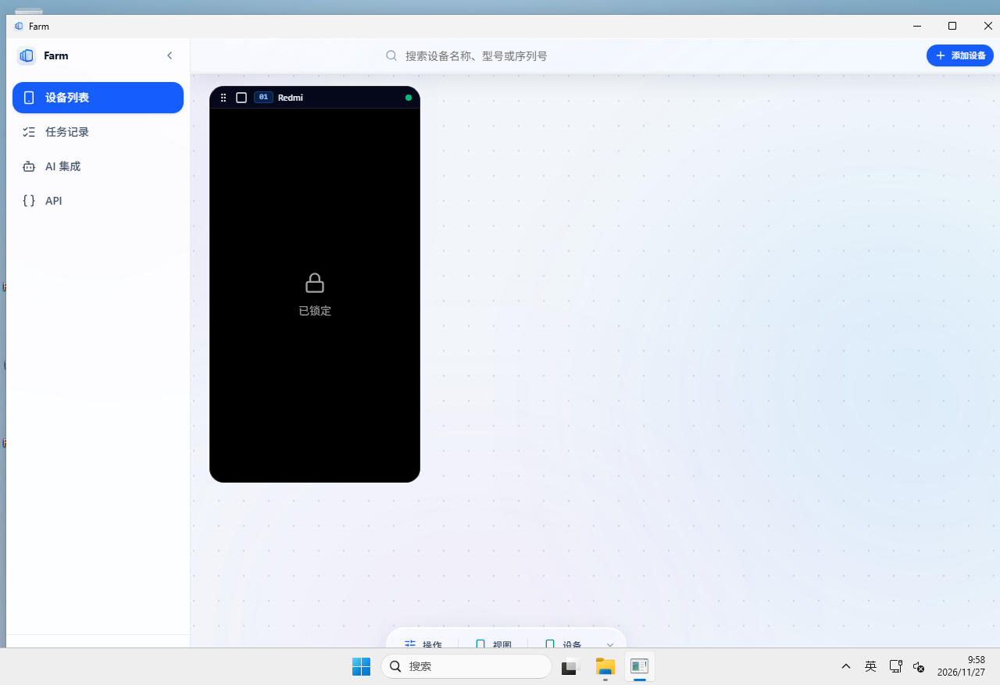
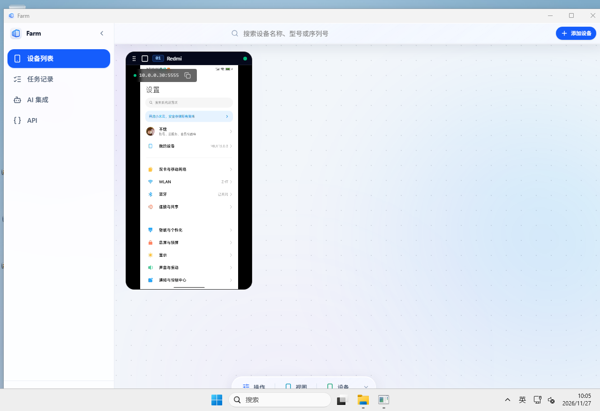
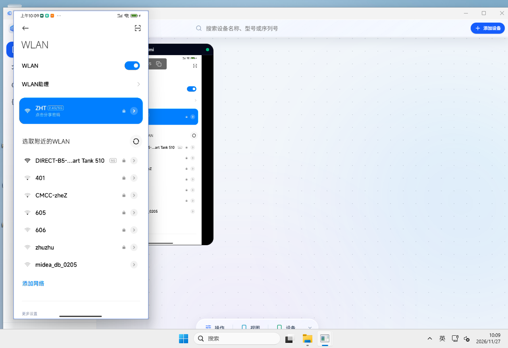
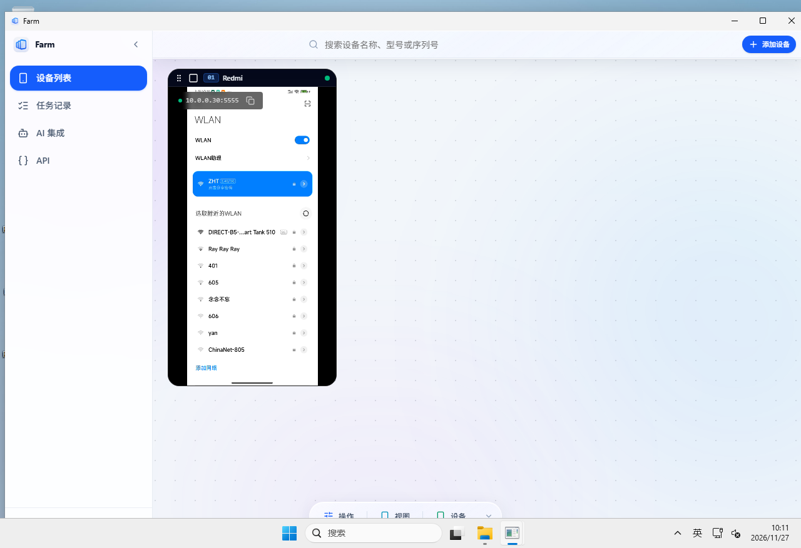
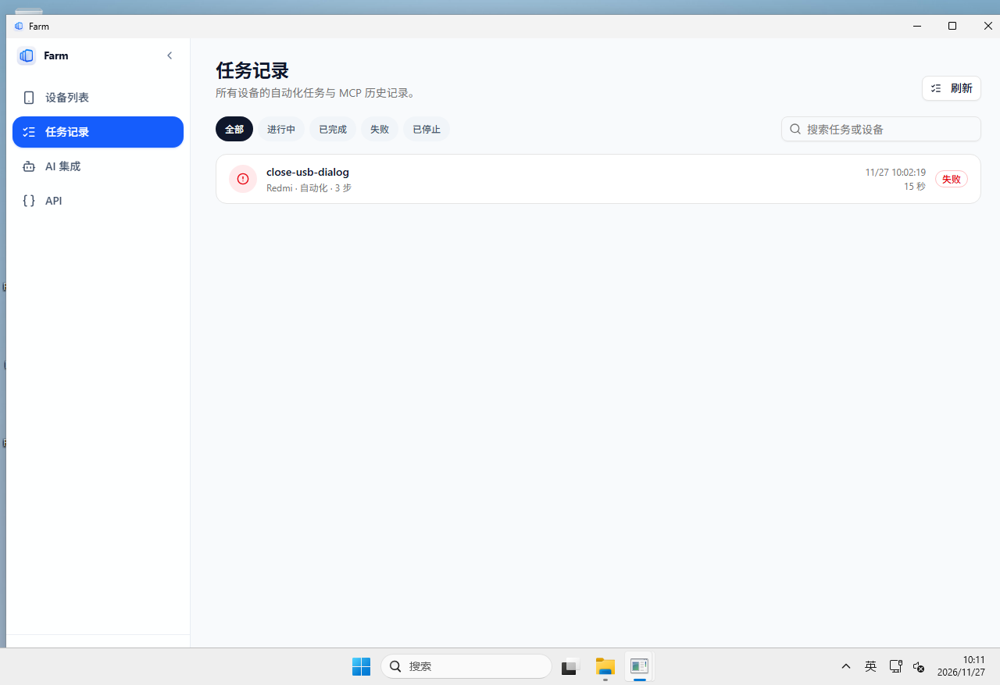
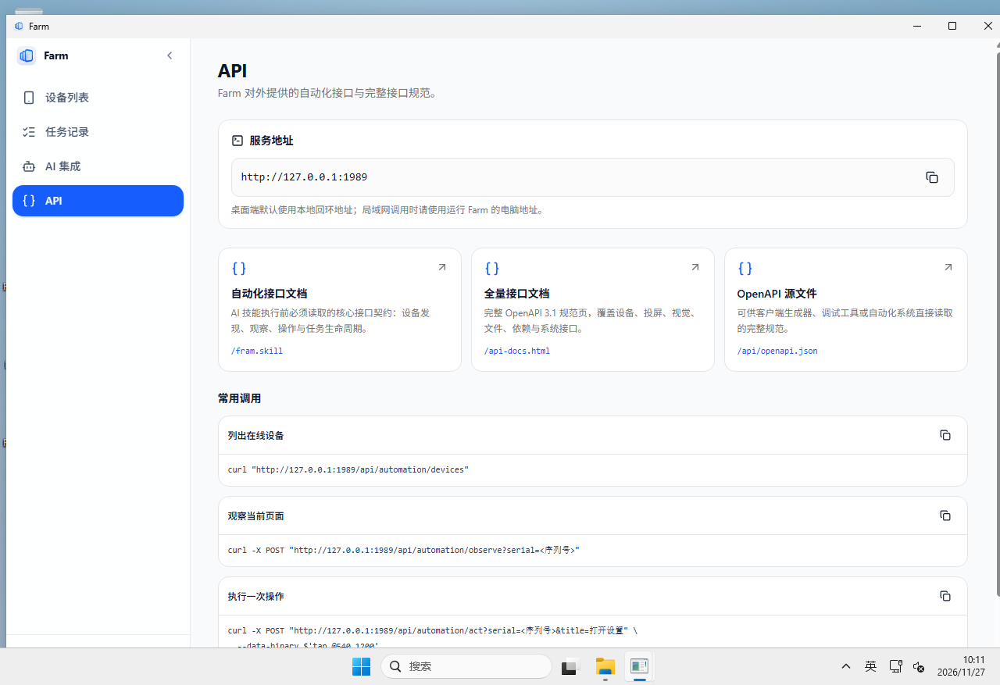
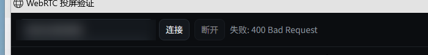
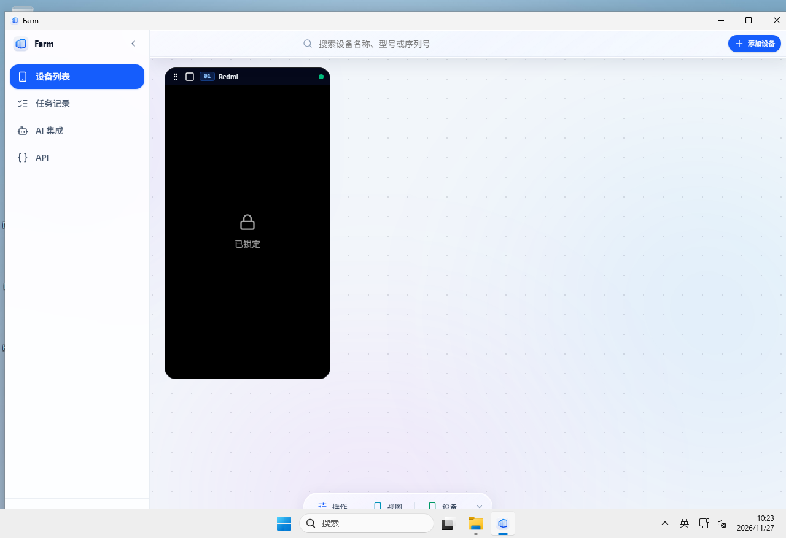

Farm Windows 11 测试报告
2026-11-27 · main 520f0ad · 目标机 WIN11TEST（Windows 11 企业版 LTSC 2024 · build 26100 · VMware 虚机）
桌面端 / ADB / WS 投屏 / 鼠标输入 / 自动化接口 通过WebRTC 浏览器协商失败
安装包v2026.11.25-beta.1farm-windows-gui-amd64.exe · SHA-256 与 Release digest 一致
替换安装桌面 Farm.exe旧版 2026.11.24-beta.1 已备份
Android 设备Redmi M2004J7ACAndroid 12 · MIUI 13.0.8 · H.264 448×1024（WS）
WebRTC 协商浏览器侧拒绝answer 视频 m-line 端口 0，同包 macOS 对另一设备可协商
结果
| 通过 | Release 包下载与摘要核验、替换安装、桌面端启动、/api/version/health、ADB 设备发现（WiFi 自动重连）、亮屏与解锁、WS H.264 实时投屏、镜像画面鼠标点击（打开小窗 → 点开设备 WLAN 页）、observe / act（含中文 check 设置 命中）/ adb commands、设备列表 / 任务记录 / API 页面渲染、PoC 路由默认 404。 |
|---|---|
| 不通过 | WebRTC 调试页在 Edge 158 点「连接」返回 400 Bad Request：服务端生成 offer 正常（h264、448x1024、profile-level-id=64000a），浏览器的 answer 把视频 m-line 置 0，pion 报 unable to start track, codec is not supported by remote。已登记 issue #5。 |
| 未受影响 | 失败期间 WS 投屏通道持续正常出画面并可点击控制；关闭 PoC 开关重启后 PoC 路由回到 404。 |
界面证据


















未覆盖项
本次不构成 v2026.11.25 的完整 beta 验收：a37fa2a（设备自动恢复与投屏诊断）在 beta.1 之后、包内不含；beta 服务实例 8081 仍不存在，通道隔离与通道切换未执行；应用内更新因虚机内更新地址不可达未判定；长时间稳定性与多设备群控未执行。
执行方式：SSH + 计划任务在交互会话运行 PowerShell 脚本完成启动、截图与鼠标点击；设备控制通过本机 REST/自动化接口完成。详细步骤与日志见 windows11_steps.md 与 windows11_logs.txt。